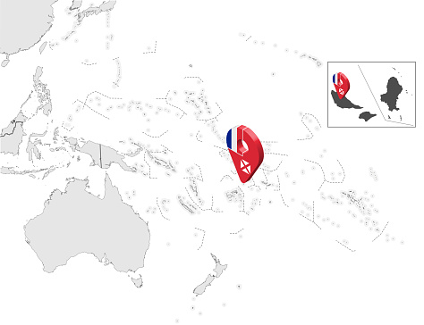
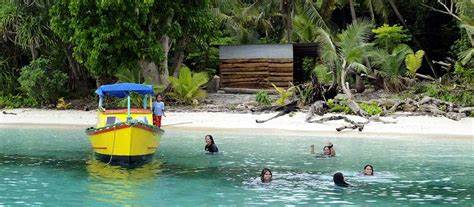

ウォリス・フツナは南太平洋に位置し、フランスの海外領土として、フィジーの北方、トンガの南方にあります。地理的にはポリネシア文化圏に属し、オセアニアの一部です。
ウォリス・フツナは火山性の島々で構成されており、主要な島にはウォリス島（Uvea）とフツナ島（Futuna）があります。島々は比較的小さく、山岳部や海岸部が特徴です。気候は温暖で、年間を通じて高い湿度が保たれ、季節風やサイクロンの影響を受けることがあります。文化的にはポリネシアの伝統を重んじ、特にカトリック教会が強い影響力を持っています。
地元の経済は農業、漁業、そして観光業に依存しています。農業ではコプラ（ココナッツの果肉から得られる製品）、バナナ、タロイモなどが主要な産業です。漁業も重要で、地元の食料としての役割が大きいです。また、美しい海岸線や伝統的な村落が観光客を引きつけ、観光業が持続可能な収入源となっています。
政治的には、ウォリス・フツナはフランスの海外領土として、フランスの法律と制度が適用されています。地域の経済はフランスとの貿易や援助に依存しており、フランスの支援によりインフラ整備や教育、医療の向上が図られています。

ウォリス・フツナはその独自のポリネシア文化を誇り、伝統的な社会構造や言語、文化遺産が豊かです。小規模ながらも、地域の生活水準はフランスの支援により高く維持されています。また、自然環境の保護と持続可能な開発が重要視され、地域社会と自然環境の調和が求められています。
ウォリス・フツナは特に「持続可能な都市とコミュニティの確立」（SDG 11）に焦点を当てています。地域のインフラ整備、環境保護、社会経済の安定化を通じて、持続可能な開発目標の達成を目指しています。